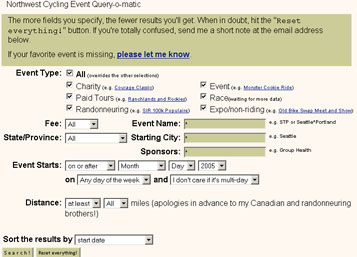

Volume 10 Issue #4 - July 2005
Ride Summary: Cascade 1200
Summer Brevets: 100k Preview
Resource: Jim Carson's Ride Finder
Ride Report: Rani Freeman's Cascade 1200
Ride Report: Paul Johnson's Cascade 1200
Ride Announcement: RAPSody
NOTE: Please send any content for the newsletter to Patrick Gray
- SIR will be conducting its first-ever (as far as we know) membership survey in August and September. The survey is intended to gather information on why people join SIR, what types of new events or rides SIR could organize in the future and how SIR can improve as an organization.
- SIR's Summer Brevet series kicks off July 9th. Click here for information on the 100 and 200.
- If you have a ride report from the Cascade 1200 (or any SIR or other long-distance cycling event) that you'd like to publish in the newsletter, send an e-mail to Patrick Gray.
Patrick Gray
The innaugural Cascade 1200 came off as a complete success. Initial feedback from riders confirms that the route, organization and volunteers were all first class. Here are some quick statistics on the ride:73: Number of riders at the start
17: Number of states or provinces represented
12: Number of DNFs
2: Tandems (4 riders)In addition to the 73 riders taking part in the Cascade 1200, nine riders took part in the 1000k over much of the same route. A total of seven riders finished. Congratulations to all!
Paul Johnson
If you’re not up for riding STP on June 9th, come to Olympia and ride the Summer Series 100km Populaire with Seattle International Randonneurs.
The ride will begin in the parking lot of the Fish Bowl Brew Pub, at 525 Jefferson St SE in downtown Olympia at 9:00 am.
After winding our way through suburban Olympia we will break out onto Rainier Road. We’ll gently climb through a rural portion of Fort Lewis to arrive at the town of Rainier, home of the giant Cowgirl. From there we’ll follow the STP route for about a mile to the turnoff to Johnson creek and out to the Skookumchuck dam. The route then turns for Tenino, follows backroads to Tumwater and then takes you on a quick spin down Capitol Way back to the Brew Pub for lunch. Please join us for a no-cost no-hassle ride. We’ll have a lunch and a drink afterward to share stories.
Jim Carson
SIR member Jim Carson maintains a website with a near-comprehensive listing of organized rides in the Northwest. The “Northwest Cycling Event Query-o-matic” includes a search engine as well as a ride feedback mechanism. We asked Jim to provide a little background on the origins of the Query-o-matic.
One of the ways I maintain my motivation in cycling during the year (and battling work and other commitments) is to sign up for an event a month. After the post-event endorphins kick in, I jot down my thoughts and use those as further motivation next year.
At last year's Bike Expo, I collected a stack of flyers from anyone who was offering them in hopes of lining up a different set of events. I put this into a spreadsheet to best wrap my mind around them. Then, as an afterthought, I put it online in case someone else had the same goal. This became one of the most frequently read features on my site. I often receive comments from people happy to find a new ride and from the event organizers who appreciate the free mention.
The spreadsheet format was unwieldy, so this winter I built a database-driven application. In layman terms, I wanted a way for people to search for events in different ways: type, distance, date, location, sponsor, cost, etc. Perhaps revealing of my tenure at Amazon, I added a reviews system. Once I accumulate enough data, it'll be another thing one can search upon. In the meantime, I've also recently added a cycling wiki to preserve the good information on the Cascade bulletin boards and mailing lists. The concept behind a wiki is everybody can edit everything. Eventually, content quality improves.
 Screenshot of the Query-o-matic
My riding got off to a slow start (pun intended) this year, but the last couple of months have been great. I plan to do the Populaire on the 9th and hope to try my first 200km brevet on the 23rd.
The link for the search tool is: http://www.jimcarson.com/x
The Wiki is at: http://www.jimcarson.com/wiki
Rani Freeman
The Cascade 1200k started out with a nice tail wind. We paced easily past dairy farms, horse ranches and corn fields. The first 93 miles (second control, Eatonville) seemed to fly by. We had lunch at a wonderful bakery called Ohop. Our group kind of took over the place. We all felt great at this point.
The next section started out the same, then soon began to get hilly. At 140 or so miles we started the climb up Elk Pass (for some reason we thought it was called Cougar Pass). The elevation is 4080. The descent was very nice. The grade was mild and it wound through a heavily wooded area with very little traffic. This led us to the next control, Northwoods. the volunteers were waiting to make us a wonderful sandwich, give us cold drinks and a comfortable place to sit . Rumor has it that later in the evening they made espressos for everyone, we were gone by then.
Soon out of that control we started to climb again. Oldman Pass 3100`, was the name of this killer climb. It seemed to go on forever and I soon discovered that I did not fill my camelback with enough water. I ended up rationing to end up with just enough to make it in. From the bottom of the pass we had twenty miles to the first overnight control in Carson. We ate lasagna and slept on a gym floor in one of the schools. Funny how comfortable a wooden floor can be when you are tired!
The next morning we had breakfast and headed out. We started out with a nice tail wind, traveling beside the Hood River; very beautiful. This same road took us through five tunnels. We were supposed to press the warning button that alerts motorists that cyclists are coming through - that would have required stopping. The next part of this day was riding through the high desert. It was uncanny how much this section reminded us Texans of West Texas-Heat included! This section wore a lot of folks down. It was incredibly hilly and very hot. We finally made it to the lunch stop, Toppenish, and had lunch in a small café. We didn’t stay here long, as we were anxious to get this section over with! The second part of this day was not any easier than the first. We caught up with Linda and Tim from California and road together for a while. I don’t think that I have seen a better climber than Linda, or a better descender for that matter.
We were all about to melt out on this dusty, rolling desert when low and behold we see a tent set up with Mark‘s wife and kids. They were offering ice cold drinks and snacks. I could have kissed them! What a lift! I left that stop feeling like a new person. Thirty miles or so later (and lots of head wind) we were at the next control, Mattawa. This was a windy, dusty place. We stayed at this control for a while, refueling ourselves, then headed out…into the strongest side wind I have ever been in! The wind was so strong that it would move my bike across the road. Brad and I were trying to draft, but kept knocking into each other. So single file it was. The only nice thing about this section was that we eventually got to turn right and had a screaming tail wind for a few miles. Eventually we ended up at the second overnight control, Quincy. Again we slept in a school gym. It was one of the best sleeps of my life!
The next morning we had a catered breakfast. We stuffed ourselves then headed out. Ten miles or so up the road we were in McDonalds eating again. Fifty miles into this day we parted from the 1000k’ers at the Farmer control. I said a farewell to my riding buddy Brad, and headed off by myself. The air was cool with a light rain. A few miles down the road I was caught by Dave, a nice guy from the Seattle area. He asked If I minded him riding with me and I said, “No, I would love the company.” So we rode together for the remainder of the ride. It was a blast! He helped me get down the passes, and I introduced him to string cheese.
Our third overnight control was in Mazama. What a beautiful place! Surrounded by mountains with a gorgeous river running through it. When we got to the control we were immediately greeted by volunteers that took our bikes and pointed us to our cabin, then carried our luggage for us-WOW!!! After showering we were set down in a small dining area and served spaghetti and drinks. I felt like I was on a cruise. We got in at 8pm, so we were able to get several hours of sleep.
The next and last day we awoke to a catered breakfast…then we started climbing. Up Washington Pass, then up Rainey Pass. We had a little bit of rain on these passes, but not enough to bother us. It got a bit chilly at the top, but not too much for a nice GoreTex jacket. The rest of the day was taking our time, talking and stopping at stores for frequent refreshments. In the last hundred miles I started to smell the barn and off we went! We made it in at 7pm, showered and headed to the nearest Thai restaurant.
This was my third 1200k event and my favorite by far. I enjoyed the established sleeping controls and prefer them to the all night riding that is usually necessary on other 1200k’s. I was also very impressed with the helpfulness and kind enthusiasm of the volunteers; it made the route seem not as difficult.
The next Cascade will definitely be on my agenda, and I’ll bet I can round up a few more Texans to join us.
Thanks!
(as seen from the back of the pack)
Paul Johnson
I was not as well rested as I had hoped to be when the alarm went off in the morning, but I felt otherwise prepared for this event. Work had been eating me alive for the previous two weeks and though most of my participation in organizing the event had taken place early in the planning stages, there were still last minute coordination needs with the overnight stops, food service and janitorial, etc. Thank the gods that Mark Thomas and especially Terry Zmrhal were working on this event; their experience really paid off. Big thanks too to Jon Muellner. It seemed like every time we had a change to put up on the web, or modification on the site, Jon had it done almost before we could get the words out. Not the typical IT experience one gets in the working world, I guess it pays when you do what you love.
I’d packed and sorted my gear according to the needs of each day of the event. (Note to self: Those really big Ziploc bags that hold all your clothes for one day are a great idea, no more rummaging through a dark bag at an overnight stop trying to find that matching glove!) I had a pretty good guess on what the weather would offer, and so had wool jerseys for what I expected to be the cool days and poly jerseys for the hot days. There is a little home court advantage when you know the course and I had ridden almost all of it. Whatever I hadn’t ridden I had scouted in developing the route within the previous three months.
We rolled out in cloudy weather. It was actually a little more thrilling than I anticipated, I try to keep my head about these things, and my success strategy is all about conserving energy and limiting my losses. But this sort of felt like rolling down the runway for a maiden flight in a plane you just built. I was excited to see it start up but had some anxiety about whether it would stay aloft for the whole flight.
It seemed like a very fast start and long before the first control I was riding solo or leapfrogging riders at stops. One added adventure we had not advertised, I got to be in a Parade in Buckley!
Not far down the road I was to have my exciting brush with mortality. I turned onto Orville road and went past the turnoff to the new fancy housing development up on the ridge. As I rolled along unsuspecting, a big farm dog came shooting out of the bushes and tackled my front wheel. I did not see him coming and so there was no time at all to react, it was instantaneous, dog, and then pavement! I went down hard on the drive train side, the impact had thrown me full out in the lane and there were cars following I recall thinking two things, “This wasn’t where I wanted to end my ride and don’t run over my bike” (well I had another thought about the dog but it’s not printable). In what seemed like less than two seconds two people were standing over me, one asked if I was alright and the other said “Don’t move, I’m a fireman, are you all right?” My elbow felt like it was on fire and as they helped me up I felt sharp pain in my hip. Not good I thought. But after a little bending at the waist and deep breathing I figured nothing was broken on me and so turned my attention to my bike, expecting the worst. Wheels were spinning well, the brakes seemed to work, the derailleurs were still attached. The only apparent damage was torn bar tape in the drops, so back on the bike and away we went.
During this time a group of riders came through. Scott Gater stopped and asked after me, I sent him on. It was an achy pedal around Kapowsin Lake but I was riding normally by the time I got into the Ohop bakery.
The weather got generally better as the day progressed. It was nice to see as it was pretty much conforming to the forecast. I rode to Morton most of the way solo, I just couldn’t find anyone at my pace. From Morton to Randle I hooked up with riders from Florida, it was a relief and a bit of a lift to ride with others, it always is.
I didn’t spend much time in Randle, knowing what lay ahead, I was anxious to get the climbing done and I wanted to get as much of the descending done during daylight as possible. I was able to get over the mountain and through most of the descent before it got dark.
Into Northwoods there was a nice bike camp going. Don Smith, should either own a sandwich shop, a homeless shelter or a hobo camp. I’m not sure which but Don had the show going in great order. Peter McKay was also helpful here (anyone who can sign the card is helpful!).
Again I wanted out of there quickly. I knew the road ahead pointed up and I would rather spend time on a gym mat in Carson than in a lawn chair in Northwoods. I remember hitting the next climb, seeing the taillights going up into the sky like a jet taking off, it reminded me of PBP. I was just glad I had ridden it before; this would have been really demoralizing otherwise (which it was in 2003).
Into Carson I could see I was not going to get much sleep. Dwayne Wright was there with a smile and a helping hand as were many other cheerful volunteers. Dwayne asked how I was doing and I replied terrible, without a slip he replied with a cheery, “There you go! Things are right on track!” He really made me laugh and so I told him he needed to be concerned as it appears that I am developing the ability to overtake his strangle hold on last finisher status…… we’ll see in a few weeks at the Gold Rush!
So after a couple hours of sleep I was up and out the door with a banana in my pocket and a couple bowls of instant oatmeal in my belly.
This morning was really hard and if I had a low point where I might have called it a day this was it. My hip and elbow were very stiff and painful, the road rash had quieted down but still, getting the pedals to turn over was painful. I did eventually warm up and was really happy to see that we were not going to have the roaring headwinds coming down the Gorge. I stopped at the Bridgemar and got a fresh BBQ beef burrito and a can of espresso n’ crème. This and my body warming up helped me to feel better on the bike, maybe I’d get to Goldendale and see how I felt.
Somehow I rolled past the turnoff to Klickitat, but as soon as I got to the other side of town I knew I needed to go back. I would be happy if this was the sum total of the “special K’s” I was to get. I think the ride up the Klickitat is one of the more pleasant sections, you get to see how things were in this area before windsurfing and high tech arrived, it’s a nice river. Until you get to the point where the road attacks the Columbia breaks, then there are a few miles of steeper pitches and before you know it you are up on the bluff amid wheat fields with beautiful views of Mt Hood and Mt Adams.
I rode into Goldendale with Peter on a recumbent with a red rocket fairing, I was impressed with his climbing. We ate at the Subway/DQ/Foodmart, I let him know about the impending climb over Satus Pass and the long descent through the desert to Toppenish. As I was readying my bike to leave I noticed a little play in my saddle. On closer inspection I noticed that I HAD LOST ONE OF THE ADJUSTING BOLTS in my two-bolt Thompson seat post! This meant that my saddle was now connected to the seat post by just one bolt, this could be a deal breaker but nothing came to me so I figured I’d ride out and see what happened. I had seen Mike Richeson on and off and figured he’d be up the road not too far. I bought a spare 20oz bottle of water and strapped it to my Carradice and I was out the door.
I did better on the climb to Satus Pass than I had in years past. It was hot but not too bad. At one point I had to stop and wipe all the sweat and sun screen out of my eyes, I was worried this might mean I’d be getting burned but I was sweating so hard there was no way I could keep the sunscreen on. There was a steady rivulet of sweat running down my spine and pooling in my shorts. At least I knew I was well hydrated. As I rode along I worked the problem on the saddle in my mind, I also was consciously making an effort not to jar the saddle while going over bumps. The only solution I could come up with was to try to zip tie the rear of the saddle. This really sounded sketchy, but given an hour and half of climbing it was the best my sun baked brain could do.
I saw Mike’s truck parked near the summit so I pulled over and woke him from a well deserved nap (sorry Mike!). we consulted; he scratched his head and in less than a minute said, “How about trying a zip tie?” I guess zip ties are to randos what duct tape is to the home handyman. Mike got on the job and in no time had it on and cinched tight. It seemed to be working, I got out an allen wrench to tighten the front bolt to put tension on the zip tie, and I was also sort of testing to see how strong this ziptie would be. I was really surprised that I could tighten the bolt till I was fearful I’d break it, this might just work, or at least I might get to the next control. The only problem was that the saddle was just slightly nose up. I thought this might give me a little problem down the way.
Over Satus pass we got 25 miles of strong tailwinds, so for 25 miles all the riders were legends in their own minds, what a gift! Toppenish came at about the right place; I was ready to get off the bike. It was very hot and I was ready to eat. Inside I was greeted by the same woman who was there two years ago. We were clearly the oddest thing to roll through the valley in some time and she just couldn’t get enough of us. I let her know I was one of the riders who was through in ’03, she greeted me warmly, “Not as hot this year, sit down and take you shoes off!”
I sat down and had a cheese burger and potato salad. A rider sitting across from me was having a chili burger, I chuckled and related the story of how Dan Turner got his nickname here in this very restaurant, “Mr. Chili Waffles,” what is it about chili in Toppenish? I was out of there pretty quickly and riding on to Sunnyside and Granger. I stopped at the convenience store before heading out of town and bought another 20oz bottle of water for the ride over the Rattlesnake hills.
On to the rough chip seal I caught up with the Floridians again, and Andy from Atlanta. Seems either I was getting just a bit stronger or they were feeling the hills a bit. Either way I was comfortable riding with them and they graciously welcomed me into their group. This stretch did not seem as bad as I remembered, and not far from the end there was a water stop control manned by Mark’s wife Chris. I had a couple cups of iced Sprite and headed for the last climb over highway 240.
The descent to Hanford was into a little headwind, so I didn’t get the push I had hoped for. By the time we got to the Vernita rest stop the wind was roaring. I almost walked my bike across the bridge, the only reason I didn’t was because there was not a car to be seen.
I climbed the hill up out of the Columbia valley as the sun was going down, the wind was really incredible. The last two turns into Mattawa were really horrendous. On the last turn to Mattawa, I was riding head on into the wind, it was I think an 8 mile leg, and I was struggling to get 8 mph. I shuddered to think that I might get to Mattawa and have nothing left. I put my head down and focused on limiting my losses. I could not help but feel that I was bleeding time ….. and calories. My legs were starting to cramp and my butt was telling me that what seemed like a minor nose up problem with the saddle 50 miles earlier was actually more like sitting on the north face of K2.
I got into Mattawa and it looked like a forward aid station in Afghanistan. Dead bodies were strewn about the parking lot, Don was ministering to the needs of the wounded and Melissa was her typical cheerful self, taking my bike getting me food and drink, offering encouragement. There was a tiny mascot kitten, keeping an eye out for any scraps that might get dropped. I had a sandwich and a Cup o’ Noodles and sat for 15 minutes assessing my situation.
I figured somewhere around Quincy I would have a low point. I knew it would be dark, I thought there might be wind, and that my body might be suffering just a leeetle bit. It had all materialized in this poor little ag worker community. I’ve done community development work here on and off over the last eight years, and it did not help my mood much to think that there were not obvious visible improvements that had developed in that time. I thought if Mayor Judy were to show up right now she might think we were a fresh load of migrant workers looking for a job and a place to say.
This line of thinking was not taking me in the direction I wanted to head, so I got on my bike and left the control. I expected I‘d see the others down the way, they were all stronger riders than I. I was most worried about the wind I might encounter once I got down to the river. It was there but not as bad as I expected. This cheered me up and I rode strong for the next couple hours. Somewhere between Mattawa and Quincy the Floridians caught me, we rode well together to George, successfully negotiated this crazy freeway overpass, and then rolled on to Quincy.
Getting into Quincy I could see again that I would not get much sleep, three hours last night and now two hours tonight. My wife Sheila was there and my friends Dan Fender and Nancy Nelson. They all took great care of me. I had a bowl of rice and beans, a shower and headed for the gym mats.
Up in the morning I introduced myself to Karla the food service person I had been working with over the previous few months (“…oh, and would it be possible for you to serve that breakfast from 4:30 to6:00?”). The breakfast was GREAT! I ate, and took off. A half block down the road I realized I had not filled my water bottles so went back to get that done
My saddle issue had not graduated to the category of serious problem. I had a full tube of triple antibiotic plus, the plus being a pain reliever. I would use the whole thing before I arrived at Mazama.
Not far out of Quincy we hit fresh chip seal, I mean FRESH as in the trucks were lining up to dump the gravel on the fresh tar. It was a little like riding through a gravel pit. I took it easy and rode much of this stretch with Len Lescosky, a really level-headed rider and fun to talk with. As I rolled into Ephrata, I wanted to get a sandwich to take with me. I knew this next stretch to Farmer was going to be a little more of a challenge than most people expected.
Stopping at the Safeway I noticed that my rear fender had broken in half. I considered just taking it off, but I knew that there would some wet ahead and I also knew that would take some time. That left the only logical solution: zip ties to the rescue! I was able to snug it up I drilled a couple holes in the fender with my Swiss army knife awl and double zipped and was ready to go. I bought another 20oz bottle of water and a sandwich for the ride and rode out.
I caught Scott going out of town, we were on Sage Brush Flats road. I recall Kent Peterson saying something to the effect that this road has nothing to do with Flat. We rode together well, for some treason I felt really strong here. I think it’s partly knowing you are more than half way there, and coming off a little rest really helps too.
I always really like riding down into Moses Coulee, it just seems prehistoric to me and it would make a great back drop for “Jurassic Park: the Bike Adventure”. I have a vision of T-rex running down a rando rider on a bike taking a big bite, then spitting the rando rider out, spitting the evil taste out of his mouth in disgust, the equivalent of a snake eating a stink bug. The climb up US 2 to Farmer is always a leg breaker for me, but again one of those places where you just put your head down and find your zone.
Into Farmer, a nice control was set up. From here you can see the east slope of the Cascades and it looked like a wall of rain 30 miles off. This is also where the 1000K and 1200K riders go their separate ways. I reconnected with Len, and he and I were heading out about the same time so I wished him luck on the remainder of his 1000K adventure. I knew we had farther to go to get to the mountains and took some hope from the idea that maybe the weather would pass before we got there.
I went out with Scott, we rode together pretty well, but three miles out he realized he had left one of his bottles at the control. This was something of a crisis. I had a spare 20oz bottle that I could have offered, but I’ve run out of water on this ride twice before, and it was not pretty. I didn’t offer the bottle and it made me feel selfish and small, on the other hand I remembered getting into Waterville and almost fainting as I filled my bottles from the city park spigot. Scott said he’d return to the control. Perhaps Melissa would catch him there with his replacement wheel. We parted ways and I rode on through the hills and wheat fields solo. It took me a long time to convince myself that I had done the right thing. The fatigue you encounter on these rides makes thinking hard. In hindsight I’m fine with what I did, but at the time I thought I was in the throes of some moral dilemma and questioned my integrity. This stretch to the canyon that drops to the Columbia was also hard for me.
Crossing the river at the Beebe Bridge I encountered Shane, Matt and Jim. These three had been riding strong all along the route; we had leapfrogged each other a couple times, usually them passing me smartly as I plod along. Being faster than me they had numerous opportunities to stop. We talked a bit and they invited me to ride with them, I told them I was pretty sure I could not hang with them, thanked them and then I rode out. They came by a few minutes later and I hopped on back, thinking I might get a few miles of lift.
I was able to ride with them all the way to Pateros. Jim was not feeling well and decided to abandon there. I thought after a meal and a drink we might be able to talk him into rolling on to Mazama. He must have seen this coming as he sort of disappeared. We ate at the restaurant. Hot turkey sandwich, mashed potatoes and gravy, and a side of … mashed potatoes and gravy! The look of the food reminded me of the controls at PBP, all the same color, all bland and high GI Carbs ….just what the doctor ordered. I had a big glass of cold milk that really hit the spot, also a cup of coffee. And we were ready to head out.
It was just starting to sprinkle, I put on my raincoat and at the last minute thought better of it. A good thing, the rain never materialized and I would have been way too hot. The ride into Mallott was good but hard, I was getting tired enough that it was a constant struggle to keep my speed up. The atmosphere at the Mallott control was like a party, a stop along the STP route. I had a sandwich and called my voice mail. I had asked Sheila to get the national weather service forecast and leave me a message. If sounded like it looked for the North Cascades and the Skagit. We would get rain or drizzle in the night and morning and westerly winds, that meant we would probably be going down to Marblemount into a head wind, how many times have I had that pleasure?
I left the control before the bunch, I knew that Loup Loup was the last work of the day and that I would really have to work on this climb. By now my rear end was really sore, and I was cramping and exhausted. The riders came by me one by one and I was just disgusted with myself for not being able to do more than eight miles an hour. I took a couple more endurolytes, drank most of a bottle of water and chugged a can of espresso and cream. I decided to time trial it to the top. I knew that I was close enough to the cut off that if I didn’t pick up the pace I would get into Mazama and have no time to sleep. I doubt I could go all the way to the finish without another sleep break. It worked, at one point I went by Ken Krichman and he cheered me on. I got to the top and found four riders gearing up for the descent.
This was a really tough descent, it’s long steep and windy, and it is in the forest so it’s all pitch black, and raining so your glasses are splattered with rain drops. But over we went, I started down with Shane, I stopped along the way to give my hands a rest, they were cramping from riding the brakes. I caught back on with Shane, then passed him and then passed Matt Settle from Virginia. At the bottom of the hill I talked with Shane about my schedule and let him know that by my calculations I was worried about finishing in time. Ever the optimist Shane assured me I would make it with time to spare. But I was thinking of riding through Mazama and trying to get at least to the top of Rainy Pass before taking a break. I thought I could roll up in a ditch and get a couple hours sleep. I just knew that I had to be out of Mazama by 6:00 if I was to have any chance of finishing.
At Mazama my good friends Dan and Gina Suomi were there to take care of me, I had a huge plate of pasta. Shane, and Matt planned a 5:10 wake figuring it would get them rolling by 6:00. This sounded good to me and would give me about two hours of sleep. I was lead off to my room.
I expected to be in a bed with some one else in a hot room with many snoring riders. Imagine my surprise to find a room to myself with a fan. I get over heated on these rides and so I was really happy to be able to cool things down. Taking my shorts off was like pulling a bandage away from a burn. I think I might have said ouch or something like that. Before falling asleep I got my shorts out for the next day and liberally applied Assos chamois cream. I planned to do it again in the morning; this last day was really going to be a challenge. I dropped into bed and a few seconds later there was a knock on the door and someone said, “Six o’clock.” I bolted out of bed hoping that the guy was wrong. I found my watch and sure enough, it was 6:00.
I was in a panic but thankfully I had laid out all my clothes the night before (I didn’t add that Assos to the shorts though) I jammed all my leftovers in my drop bag and headed for the kitchen. I was so distraught I almost gave it up right there, but instead got a plate of eggs and potatoes, bolted that down and then headed for my bike. I had asked Dan the night before to lube my chain and air up my tires; man the volunteers really make the ride.
As I was pulling onto Hwy 20 I looked at my watch, it was 6:40. For the next hour I was filled with despair, rage, anxiety, frustration, sadness, hope, joy, all the emotions. I had decided at several points to bag it, no sense trashing you body in a lost cause, live to fight another day, all the trite catch phrases, but then a curious thing happened: I passed a rider. Then, 20 minutes later I passed another rider. It gave me pause. I started doing the mental gymnastics, calculating average time needed to finish, estimating my speed over certain sections, the time I would absolutely have to get to Rainy Pass in order to finish. It had a calming effect, or perhaps an exhausting effect, I don’t do arithmetic well under the best of circumstances, and figure if I go to hell, the devil will have me riding a bike over hot coals while determining percentages and ratios.
Shut up and ride the bike! Get to the next control and you’ll see what is possible. A mile past lone pine (fir?) campground I had drained my first water bottle and reached for the second, only to find that in my rush I had not filled it. This set me off again but I quickly got hold of my self. I’d had to drink creek water on this stretch when I rode it as a 1000K in 2002, and so now I’d do it again. I worked 25 years for the Forest Service and for much of that time was able to drink from streams without fear of giardia. I needed water and was not going back so that was that.
I was amazed to get to the top of rainy pass at 10:00. This was actually the time Matt and I had talked about, he was already there putting on warm clothes. Matt, Shane and I headed out.
As predicted there was a headwind, and it was wet cold and rainy but at least it was daylight so I let it go for all I was worth, pedaling when I had to. I realized I had made up time on my schedule climbing and I sure didn’t want to give any away on the descent.
Don, Brad and Dan Turner had a nice sandwich stop set up along the descent, I pulled in there and it was a party-like atmosphere. I had a quick Cup o’ Noodles and headed out, I hated to leave, it was a lot of fun but I knew I had to keep pushing.
Into Marblemount I knew I had to do something about the pain in my rear. I rationalized that this was not like a broken leg, no bone ends protruding, but more like a sliver under the fingernail, it wasn’t going to kill me but you’d never know it for the pain. In dealing with the problem I almost put myself out of contention for finishing. In the convenience store I was looking for something for the pain, I found a tube of Benedryl PLUS and knew that would ease the pain. I ate quickly, filled my bottles and went to the bathroom and applied the medication. As I was getting into Rockport it occurred to me that I some times use Benedryl TO MAKE ME DROWSY so I can get to sleep. Sure enough along the Sauk River highway I started feeling very tired.
I pulled out my last can of espresso n’ cream, and downed that and started inhaling the caffeinated mints. Somehow I got through this stretch to Darrington. Going by the Darrington Ranger Station reminded me of my days on the Mt Baker NF, planting trees in the spring, fighting fires in the summer. Matt and Shane were eating at the hamburger shack. I pulled in there and asked if the girl could put a burger together quickly, I did my ‘disappearing burger’ trick, Shane and Matt were duly impressed, filled my bottles and took off. They came along shortly. They were planning to get in by maintaining a 14mph average. No way could I hold that but thought again I would hop on back to see how far I could get with them.
As it happened I was getting a little stronger, and I am sure they could have finished sooner but took a little speed off to accommodate me. I really owe this ride to them. I rode a lot of this and the next stretch standing. Standing up or sitting down sent a searing pain through me, and I was not able to climb seated, there were a lot of rollers, so I did a lot of standing, with 730 miles in my shaky legs. At one point I asked Ken if I had my butt amputated if it would hurt any worse. He allowed as it wouldn’t but I probably wouldn’t survive, which at that point didn’t sound like too bad of an option to me.
We were into Granite Falls before dark, two more burgers in quick succession, a cup of coffee and fries and we were out the door. The last stretch in was a challenge, again navigating in the dark, but riding with Matt Shane and Ken we all worked together and found our way to the finish line with a half hour to spare.
As always at the finish there’s a real flush of emotions, so nice to see all the cheering folks, and especially to have my wife waiting there for me. It was a great ride for me; I hope it was so for others. The volunteers, the organizers, and the riders were just great.
People from all over the Northwest are preparing for the Ride Around Puget Sound (RAPSody) this summer.
The challenging 165-mile bicycle ride includes ferry rides and scenic views, with music along the way in keeping with the “RAPSody” theme. The second annual event Aug. 27-28 is sponsored by five Puget Sound area bike clubs and already has almost 100 registrants from as far away as Ketchum, Idaho and Tigard, Ore.
The route starts in Tacoma and travels counterclockwise through Vashon Island, Port Orchard, Shelton, Olympia and back to Tacoma. Registration includes rest stops, mechanical support, luggage transport, indoor or outdoor camping at Shelton High School, showers, ferry fare, souvenir socks and a finish line celebration.
In addition to the bike clubs, RAPSody is supported by local chambers and bike shops.
It all adds up to friendly competition for the best rest stop on the ride, which cyclists can do in one or two days. Woodinville resident John Rivenburgh rode RAPSody in 2004.
“I’ve never had five kinds of hummus at a food stop before,” Rivenburgh said. “It was a great ride.” He is registered to do it again this year. “I really like that it was on back roads that I’ve never seen before, and you had a nice range of riders.”
RAPSody starts and ends at Tacoma Community College this year, with free parking and a post-ride celebration. Vashon Island offers the first challenging hills, with two-day riders stopping at Shelton for overnight accommodations – either free at the high school or in motels on their own. One-day riders will complete RAPSody on Sunday, Aug. 28.
All RAPSody proceeds benefit the Bicycle Alliance of Washington’s statewide advocacy and education. Last year the ride raised $18,000, which helped BAW support safe passing legislation for cyclists and garner funding for Safe Routes to School grants around the state.
RAPSody is hosted by BIKES Club of Everett, Capital Bicycle Club, Seattle Bicycle Club, Tacoma Wheelmen's Bicycle Club, and West Sound Cycling Club.
The next official RAPSody training ride is the Tour de Kitsap July 31 in Silverdale, Wa., sponsored by the West Sound Cycling Club.
Cost is $80 through July 22, $90 until registration closes on Aug. 12 or when the 1,000-rider limit is reached. For more information on RAPSody, visit www.rapsodybikeride.com or call 206-577-6999. You can register online at www.active.com.
2005 Upcoming SIR Brevets
Date Distance Organizer Route July 9 100 km Populaire PAUL JOHNSON In and around Olympia July 23 200 km DARRIN ADAMS, JAMES GUTHOLM, PEG WINCZEWSKI In and around Olympia August 6 300 km ROBIN & AMY PIEPER NEWSLETTERS - RIDES/BREVETS/PERMANENTS - MEMBERSHIP - GENERAL INFO - PHOTO GALLERY - LINKS - HOME 2005 SIR Executive Board:
Paul Johnson, Peg Winczewski, Peter McKay, Amy Pieper, Mark Thomas, Terry Zmrhal, Jon Muellner, Greg Cox, Wayne MethnerMembership Fee:
$10 - full membership w/e-mail newsletter or $15 - full membership w/printed newsletter.Membership Address:
c/o Terry Zmrhal
9531 112th Ave NE
Kirkland, WA 98033
425-828-7818©2005 Seattle International Randonneurs http://www.seattlerandonneur.org